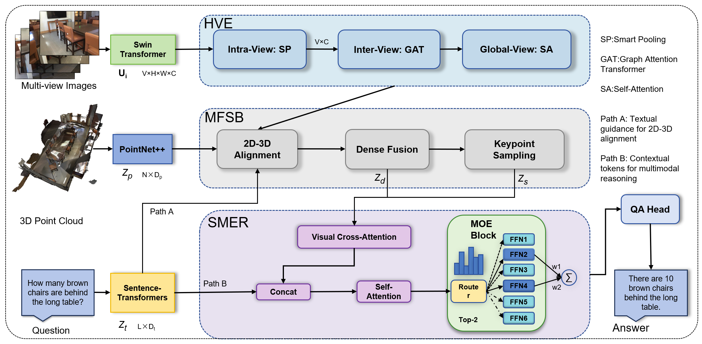

While recent parameter-heavy 3D Large Vision-Language Models (3D-LLMs) have advanced 3D Question Answering (3DQA), their reliance on massive pre-training data and billions of parameters significantly limits deployment efficiency. In contrast, efficient train-from-scratch architectures offer a lightweight alternative, yet they face a systematic bottleneck in the perception-to-reasoning pipeline: (i) conventional global aggregation discards fine-grained details and suffers from cross-view geometric redundancies; and (ii) static dense networks fail to adapt to heterogeneous reasoning conflicts (e.g., spatial logic vs. counting).
To address these challenges, we introduce HiRE-3D, a novel end-to-end framework featuring Hierarchical Multi-View Perception and Reasoning via Expert Routing. Our method tightly couples a Hierarchical View Encoder (HVE) with a Sparse Mixture-of-Experts Reasoning (SMER) module. The HVE progressively refines multi-view features via smart pooling and geometric graph attention to explicitly suppress duplicate object detections. Subsequently, SMER leverages dynamic Top-k routing to decouple diverse reasoning paths, effectively utilizing the disentangled visual tokens provided by HVE.
Extensive experiments demonstrate that HiRE-3D achieves state-of-the-art performance among train-from-scratch methods on both the ScanQA and SQA3D benchmarks, highlighting its robust cross-dataset generalization and superior reasoning adaptability without relying on massive external pre-training.
Method Overview

Figure 1: Overview of the HiRE-3D framework. HiRE-3D takes multi-view images, a 3D point cloud, and a question as input. HVE enhances view features with smart pooling, MFSB aligns features to produces sparse tokens, and SMER performs cross-attention and routed reasoning to predict the answer.
Qualitative Results (3D QA)
HiRE-3D demonstrates superior spatial reasoning and embodied perspective adapting capabilities.
ScanQA primarily focuses on recognizing and localizing static objects within a 3D scene based on geometric descriptions.
Q: How many chairs are placed around the long dining table?
A: Ten. [HiRE-3D]
Q: What wooden structure is installed along the wall behind the dining table?
A: Kitchen cabinets. [HiRE-3D]
Q: What tall piece of furniture is standing against the wall on the right side of the room?
A: A tall bookshelf. [HiRE-3D]
Q: What objects are placed on the desk directly in front of the light blue wall?
A: Computer monitors. [HiRE-3D]
Q: What object is sitting on the desk directly next to the computer monitor?
A: A teddy bear. [HiRE-3D]
Q: What items are stacked on the floor between the closed wooden door and the tall bookshelf?
A: Cardboard boxes. [HiRE-3D]
Q: What unique objects are placed on the floor directly in front of the dark sectional sofa?
A: Wooden stump tables. [HiRE-3D]
Q: What type of soft seating is located on the floor right next to the wooden TV console?
A: Chairs. [HiRE-3D]
SQA3D focuses on understanding the model's spatial reasoning under a given first-person situation and viewpoint.
Situation: I am sitting on the large orange sofa, looking directly at the wooden coffee table in front of me.
Q: If I stand up and turn to my right, what is the furniture I will see?
A: A wooden table with black office chairs. [HiRE-3D]
Situation: I am sitting in the office chair at the desk, facing the computer monitors and the world map.
Q: If I turn my chair around to face the opposite wall, what will I see mounted there?
A: A whiteboard. [HiRE-3D]
Situation: I am sitting on the bed, facing the closed wooden door across the room.
Q: What piece of furniture is located immediately to the left of the door?
A: A wooden shelving unit. [HiRE-3D]
Situation: I am sitting at the desk cluster, facing the white wall with several small pictures hung on it.
Q: If I stand up and turn around to face the opposite direction, what prominently colored architectural feature will I see?